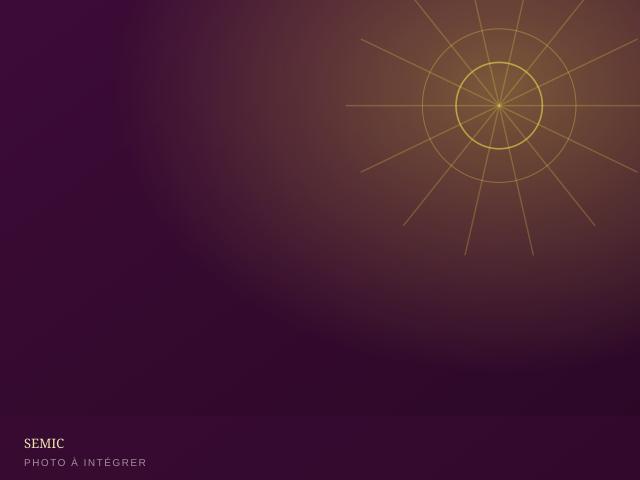
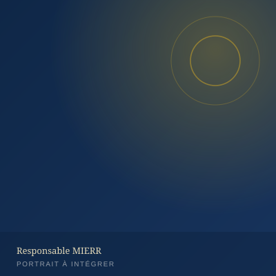
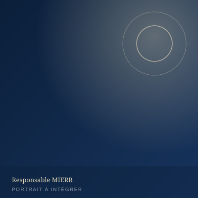

Département
Contacter le département
SEMIC — Servantes Missionnaires de Christ
Le SEMIC rassemble les femmes de la MIERR autour de la prière, de l'enseignement biblique et du service. Il forme des « servantes » enracinées dans la Parole, actives dans l'intercession et engagées dans l'accompagnement des familles.
- Rencontres hebdomadaires de prière et d'enseignement biblique
- Accompagnement des femmes et des familles
- Organisation de la CO-SEMIC (convention annuelle du département)
- Formation au leadership féminin chrétien
Programme détaillé, calendrier des rencontres et actualités du SEMIC à publier via le back-office.

Responsables du département

[Nom du/de la responsable]
Coordinatrice nationale SEMIC